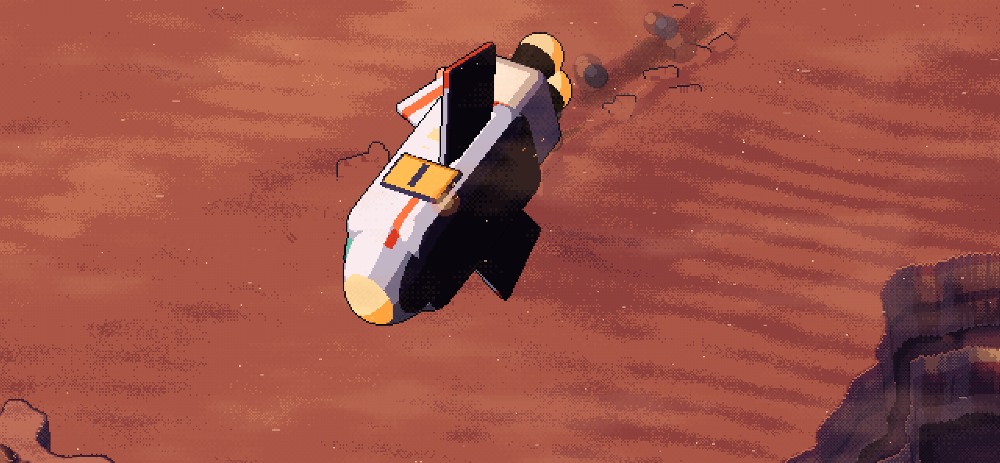
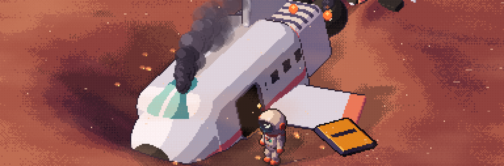
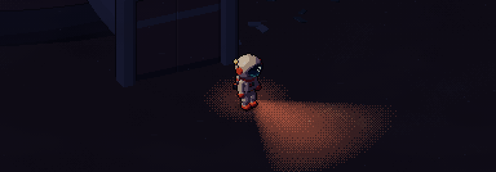
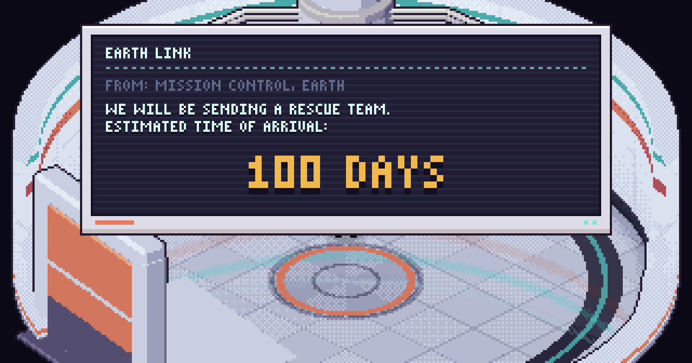
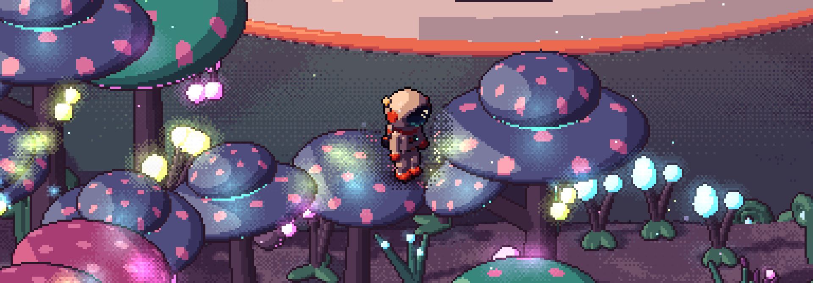
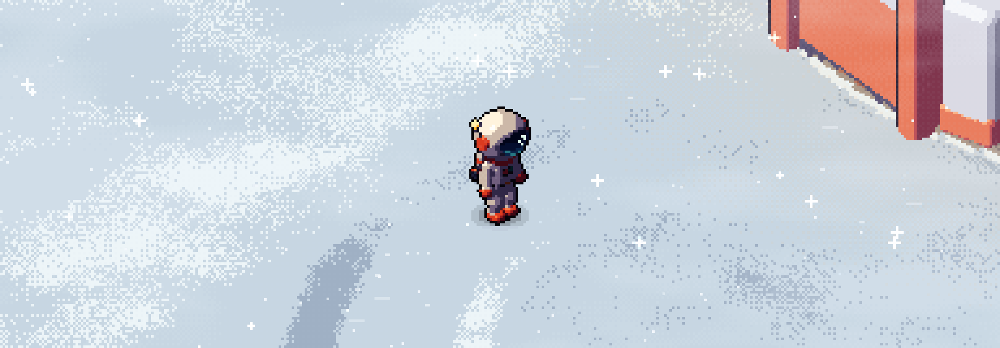
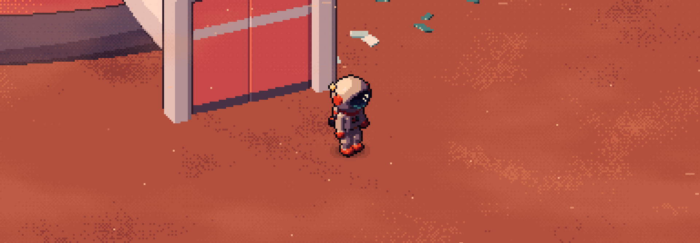
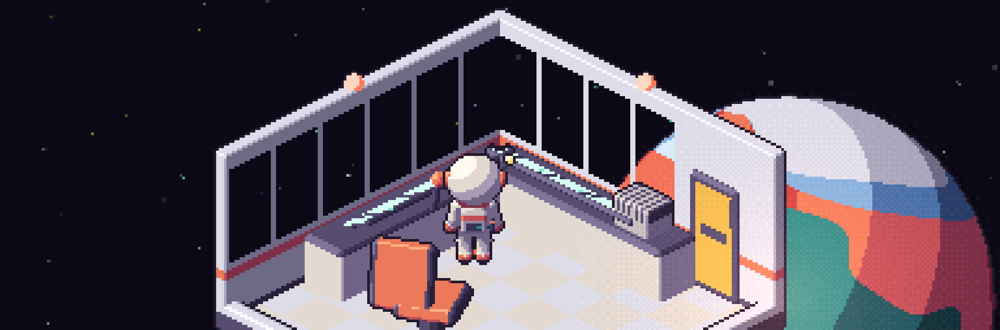

01Crash-land
A solar storm cuts the radio mid-warning. The ship ploughs a trench beside the base and you climb out into the dust.
GTFO · Great Time For Oxygen
A cozy pixel-art survival game. Crash-land on Araxys, bring a dead outpost back to life with your multitool, and send an SOS to Earth before the next solar storm.
or play it in your browser — nothing to install

The story
The crew before you built a base on Araxys and then stopped answering. Your ship doesn’t survive the landing. Everything after that is up to you.

01A solar storm cuts the radio mid-warning. The ship ploughs a trench beside the base and you climb out into the dust.

02The base is dead and the nights are truly dark. Fix the oxygen plant, the reactor and the cracked windows, then line up the mirrors that power it.

03Repair the comms dish on the ice, send your SOS, and wait out the light-speed delay for Earth’s answer.
What you’ll do
Your multitool picks its job from what you point it at: mine rock, gather scrap, lift a crate, or fix what’s broken. One button does it all.
Red-dust plains round the base, a glowing alien forest round the nursery, and a frozen massif where the comms dish waits.
Radiation warnings follow timing from archived NASA DONKI flare and particle data. Get inside, or the exposure meter fills.
Day turns to a violet dusk and then to real dark in 12 minutes. Only glowing things stay lit, so you carry a lamp on your suit.
Revive the nursery, collect wild seeds, and plant Emberpods for food and Dewpods for water. Moonwell seeds only open at night.
Every map is pre-rendered four times. Press G or H to swing the whole world a quarter turn and find what’s hiding behind it.
Screens
No hand-drawn art: each map, machine and sprite is ray-marched from signed-distance models, then dithered and outlined in one shared palette.




Download
Free, one file, nothing to install. Pick your system, or play right here in the browser.
GTFO-windows.zip.GTFO.exe.SHA-256 …
GTFO-linux.zip.chmod +x GTFO.x86_64./GTFO.x86_64SHA-256 …
The first load downloads the whole game, so wait for the loading bar. After that the browser keeps it. A keyboard is needed; there are no touch controls yet.
The download checks itself: after the file arrives, the page compares its SHA-256 with the value above before it lets you save it.
Each file is stored in parts so it can be hosted for free. If your browser blocks the button, download the parts below and join them. On Windows (Command Prompt, in the folder with the parts):
copy /b GTFO-windows.zip.part0+GTFO-windows.zip.part1+GTFO-windows.zip.part2 GTFO-windows.zipOn Linux or macOS:
cat GTFO-linux.zip.part* > GTFO-linux.zipControls
| Action | Keyboard | Gamepad |
|---|---|---|
| Move | WASD or arrows | Left stick |
| Run | Shift | Right shoulder |
| Jump (hold to go higher) | Space | A |
| Take out / put away the multitool | T | Y |
| Use (hold to fix, mine or gather) & open doors | F | X |
| Backpack | E | Start |
| Suit lamp | L | B |
| Turn the camera | G / H | D-pad left / right |
| Zoom (outdoors) | I / O | D-pad up / down |
| Map | M | Back |
| Eat or drink the selected item | C | Right-stick click |
| Options | Esc | Share / Misc 1 |